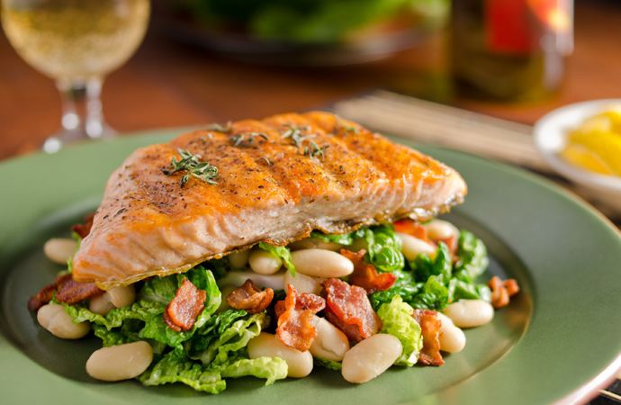

By SILK Life Staff | December 10, 2025 | COMMUNITY

Sarah Adams arrived in Marietta on a gray November morning with everything she owned packed in a 1998 Honda CR-V, three rescue chickens in the back, and a dream of creating something she couldn't quite name yet.
"I didn't know the word 'innkeeper' would apply to me," she laughs, pouring tea in the sunny kitchen of SILK Homes' Marietta property. "I just knew I wanted to create spaces where people could land softly."
At 34, Sarah brings an eclectic background to her new role. She's been a librarian, a farm apprentice, a hospice volunteer, and most recently, managed a food co-op in Columbus. The thread connecting it all? A passion for helping people find what they need, whether that's the right book, the ripest tomato, or a peaceful place to call home.
Sarah discovered SILK Homes while researching intentional communities online. "I was looking for co-housing situations, ecovillages, anything that wasn't conventional apartment living," she explains. "SILK wasn't exactly what I was searching for, but it turned out to be what I needed."
She visited Marietta in September, fell in love with the historic river town, and when the innkeeper position opened up, she knew it was meant to be. "Marietta has this quality—it's small enough to know your neighbors but cultured enough that there's an art scene, a college, actual bookstores. It's rare."
The position of innkeeper at SILK Homes is part property manager, part community cultivator, part general problem-solver. Sarah maintains the physical property, screens potential residents, coordinates maintenance, and most importantly, helps foster the kind of intentional community that makes SILK different from ordinary rentals.
Sarah's personal passion is homesteading—not off-grid survivalism, but practical self-sufficiency skills integrated into modern life. "I want to know how to preserve food, mend clothes, keep chickens, grow vegetables. Not because I'm preparing for apocalypse, but because these skills connect me to life in tangible ways."
She's already planning expansion of the Marietta property's gardens, organizing a community canning workshop for next summer, and has introduced her chickens (Harriet, Louise, and Joan) to curious neighbors who'd never seen eggs that weren't store-bought.
"We've lost so much practical knowledge in just two generations," Sarah reflects. "My grandmother could preserve an entire summer's harvest. She made her own soap. She knew which wild plants were edible. I'm trying to relearn what she considered basic life skills."
What makes Sarah particularly suited to innkeeping is her understanding of hospitality as spiritual practice. "Creating welcoming space for others is its own form of service," she says. "When someone's had a hard day and they come home to a space that feels cared for, that matters."
She's known for small gestures—fresh flowers in common spaces, a basket of garden tomatoes left with a note, remembering that someone mentioned needing to borrow a particular tool. It's the kind of attentiveness that makes a house feel like home.
Residents are already noticing. Marcus, who moved in two weeks after Sarah started, says: "There's a warmth here that wasn't in other places I looked at. You can feel that someone cares about the space and the people in it."
Sarah's vision for the Marietta property is simple but profound: "I want this to be a place where people can explore who they're becoming without judgment. Where trying to live more intentionally is normal, not weird. Where community is available but not mandatory. Where home is both refuge and launching pad."
With her blend of practical skills, genuine warmth, and deep respect for both solitude and community, Sarah seems poised to make that vision real. Marietta is lucky to have her.
Sarah welcomes inquiries about availability, community fit, and what makes Marietta special. Historic river town living with intentional community.
Contact Sarah →© 2025 SILK Life Magazine | Home